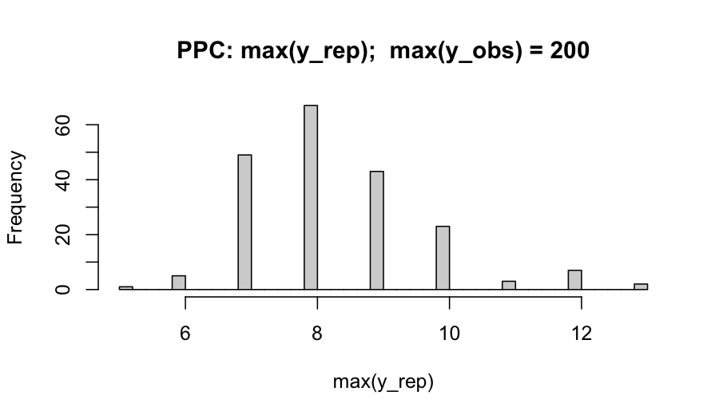

Tutorial 10: Cross-engine triangulation: when Bayesian engines disagree
2026-06-06
Source:vignettes/flexyBayes-10-triangulation.Rmd
flexyBayes-10-triangulation.RmdPremise. Disagreement between two Bayesian inference engines on the same model and data is a finding, not a bug. This vignette walks through the principled diagnostic protocol implemented by
flexyBayes::triangulate(): verify each engine’s own diagnostics, classify the disagreement type, run targeted predictive checks, resolve, and document.
1. Why triangulate?
When you fit the same model to the same data on two engines — say
Hamiltonian Monte Carlo (HMC) via greta, and integrated
nested Laplace approximation (INLA; Rue, Martino, & Chopin, 2009)
via R-INLA — you are running two structurally different approximations
to the same posterior. Each makes a different bet.
- Stan-/greta-NUTS, the no-U-turn HMC sampler, converges to the true posterior asymptotically but introduces finite-sample MCMC noise. It can struggle with funnel-shaped hierarchical posteriors, multimodality, and very heavy tails — and it surfaces this struggle through divergences and Pareto- warnings (Vehtari et al., 2024).
- INLA is a deterministic Laplace approximation valid when the model belongs to the latent Gaussian model (LGM) class. Outside the LGM class — finite mixtures, distributional regression on the scale, latent-class structures — INLA will silently approximate, often with visible bias.
- Variational engines (e.g., greta-VI, Pathfinder) seek the posterior mode and Gaussian curvature; they typically underestimate posterior variance.
Agreement across engines is informative evidence that none of these approximation errors materially distorts your posterior. Disagreement is a triangulation prompt: one or more engines is failing this particular model–data combination, or the model itself is mis-specified. The Bayesian Workflow paper (Gelman et al., 2020) explicitly endorses cross-implementation checks as a core workflow step.
2. What disagreement actually means
Disagreement is not automatically a verdict against either engine. It is a triangulation prompt — one or more of:
- The model is mis-specified for the data, and the engines disagree about which part of the misspecification dominates.
- The engines disagree because the posterior violates one engine’s structural assumption (Gaussian-conditional latent field for INLA; absence of severe geometry pathology for HMC).
- One engine has not converged (low ESS, , divergences, or Pareto-).
- The user has implemented two subtly different priors or link functions across the two backends — what Banerjee, Carlin, and Gelfand (2014) call “the devil in the details”.
Modrák’s (2018) Stan-versus-INLA case study shows that for a Poisson generalised linear mixed model (GLMM) with independent random effects, posteriors agree to four decimal places across from 100 to 25,000 when priors are matched. Any disagreement is therefore a signal, not noise.
Reading the independence-axis label
Agreement is not one thing. Each triangulate() report
carries an independence label naming what kind of
convergence the agreement underwrites, drawn from a closed three-axis
vocabulary that follows Gelman et al.’s (2020) Bayesian
Workflow taxonomy of cross-checks:
- algorithmic — the two engines use different inference paradigms (here HMC versus Laplace approximation). Agreement on this axis is the strongest claim: it rules out algorithm-specific failure modes such as mixing pathologies or tail-approximation error.
- implementation — the same paradigm through different code bases (different automatic-differentiation framework, code generation, or numerical regime). Agreement catches numerical and prior-translation bugs.
- specification — the same likelihood through different parameterisations. No current backend pair exercises this axis alone; it is reserved for future within-backend reparameterisation checks.
A greta-versus-INLA comparison is labelled
algorithmic + implementation (the engines differ on both
paradigm and code base), so a small Wasserstein-1 distance there is a
stronger convergence statement than the same distance between two HMC
engines. The print method colour-grades the label by methodological
strength on a colour terminal; the labels are plain text everywhere
else.
3. The eight common disagreement patterns
| # | Cause | Symptom | First diagnostic |
|---|---|---|---|
| 1 | Heavy-tailed likelihood (Student-t, Cauchy, robust REs) | INLA posterior tighter; greta posterior wider, more skewed; means similar, quantiles diverge | tail-quantile differences; PPC on min,
max, kurtosis |
| 2 | Variance components near zero (boundary) | INLA over- or under-estimates small variances; greta posterior L-shaped | 5 % quantile of
;
non-centred reparameterisation; inla.hyperpar()
post-correction |
| 3 | Hyperparameter prior mismatch (PC vs half-Cauchy vs half-Normal) | tail-disagreement on propagating to fixed-effect SEs | refit with identical priors on both sides |
| 4 | Non-LGM structure (mixtures, ZI with REs on the zero-prob, hurdle with shared REs) | ZI-logit and shared-RE marginals diverge sharply; INLA
cpo$failure > 0
|
INLA’s cpo$failure; PPC on zero counts; SBC |
| 5 | Sparse data regimes (low , high collinearity, rare events) | skewness, multimodality in greta; INLA gives a unimodal Gaussian-like marginal | density-overlay plot; Wasserstein-1; tail-ESS in greta |
| 6 | Strongly correlated hyperparameters | wrong correlation structure in ; downstream latent shifts | pairs plots across engines; INLA int.strategy
sensitivity |
| 7 | Boundary effects in spatial fields (BYM vs BYM2; SPDE mesh extension) | spatial RE variance differs; precisions on different scales | BYM2 + inla.scale.model = TRUE + PC priors; verify
identical neighbourhood graph |
| 8 | Funnel-shape hierarchy (Neal, 2003) | greta divergences > 0; INLA confident but wrong on group-level posterior SDs | greta divergences; non-centred parameterisation; SBC on |
4. The five-step protocol
Step 1 — Triangulate and quantify
Fit on engine A and engine B with identical priors, link function,
and design matrix. Convert both posteriors to a common
posterior::draws_array.
flexyBayes::triangulate() does this for you and computes,
per scalar parameter:
- mean shift in posterior-SD units;
- 1D empirical Wasserstein-1 distance;
- ratio of posterior SDs;
- tail-quantile differences (2.5 % and 97.5 %).
Threshold: flag any parameter with |mean shift| > 0.1 SD or Wasserstein-1 > 0.1 SD or SD ratio outside [0.9, 1.1].
Step 2 — Verify each engine’s own diagnostics first
HMC. , ESS, ESS, zero divergences, Pareto- (Vehtari et al., 2021, 2024).
INLA. cpo$failure == 0;
inla.hyperpar() correction applied;
mode$mode.status == 0; no boundary hyperparameter mass
within
of internal-scale limits.
Do not interpret cross-engine disagreement until both engines pass their own tests. Disagreement between an unconverged engine and a converged one is a non-finding.
Step 3 — Classify the disagreement
Map each flagged parameter to one of the eight rows in §3. In applied work, the two most common patterns are heavy-tailed likelihood (when one observation drags HMC tails wider than INLA’s mode-anchored Laplace can capture) and non-LGM structure (when the user has unwittingly written a model INLA approximates rather than fits). Variance-component boundary is the most common in random-intercept models with small group counts.
Step 4 — Run targeted SBC and PPC
Simulation-based calibration (SBC; Talts, Betancourt, Simpson, Vehtari, & Gelman, 2018; ECDF-graphical refinement Säilynoja, Bürkner, & Vehtari, 2022) on the parameters that disagree. Budget: 50 to 100 replications. SBC tells you whether either engine is calibrated for this model–data, independent of cross-engine agreement.
Posterior-predictive checks (PPC; Gelman, Meng, & Stern, 1996) on the data features the disagreement implicates — tail statistics for likelihood-tail disagreements, group-level summaries for hierarchical disagreements, zero counts for ZI/hurdle.
Step 5 — Resolve and document
- If a third engine (NIMBLE, JAGS, brms-Stan) agrees with one of the two, declare the agreeing pair the reference.
- If SBC fails for one engine on this model–data, that engine is mis-calibrated for this problem; trust the other and report it.
- If neither engine passes SBC, the model is mis-specified — expand it (heavier-tailed likelihood, non-centred parameterisation, hierarchical hyperprior reform).
- If PPC reveals likelihood mis-specification, refit with an expanded likelihood.
- When all else is equal, the more flexible engine (HMC) wins, but the choice and its rationale must be documented — the disagreement metric, the diagnostic that justified the choice, the model class (LGM-fit or not), and the prior alignment. Reproducibility of the decision, not just the fit, is what makes triangulation defensible.
5. A worked example: planted extreme observation
We simulate a hierarchical Poisson regression with one extreme observation and fit it on greta and INLA with matched priors.
G <- 30L # number of groups
n_per <- 8L # observations per group
sigma_g <- 0.4
beta <- c(`(Intercept)` = 0.5, x = 0.3)
group <- factor(rep(seq_len(G), each = n_per))
x <- rnorm(G * n_per)
u_g <- rnorm(G, 0, sigma_g)
eta <- beta[1] + beta[2] * x + as.numeric(u_g[group])
y <- rpois(length(eta), exp(eta))
y[1] <- 200L # planted extreme
dat <- data.frame(y = y, x = x, group = group)We fit the same Poisson model on both engines, with a penalised-complexity prior on the group-level standard deviation.
library(flexyBayes)
priors <- fb_prior(
sigma ~ pc(upper = 1, prob = 0.05),
sd(group = "group") ~ pc(upper = 1, prob = 0.05),
b("x") ~ normal(mean = 0, sd = 2.5)
)
priors
#> <fb_prior> 3 specifications
#> sigma ~ pc(upper = 1, prob = 0.05)
#> sd(group = "group") ~ pc(upper = 1, prob = 0.05)
#> b("x") ~ normal(mean = 0, sd = 2.5)
fit_greta <- fb_greta(
y ~ x + (1 | group),
data = dat,
family = "poisson",
prior = priors,
n_samples = 2000,
warmup = 5000,
chains = 4,
verbose = FALSE,
mcmc_verbose = FALSE
)
summary(fit_greta)
#> Bayesian mixed model summary [flexyBayes]
#> ============================================================
#> Fixed : y ~ x + (1 | group)
#> Family : poisson / log
#> N = 240 , chains = 4 , samples = 2000
#> Representation: exact
#> Engine: greta MCMC
#>
#> -- Fixed effects (posterior) ---------------------------------
#> Estimate Post.SD 2.5% 97.5%
#> (Intercept) 0.5859 0.1304 0.3261 0.8413
#> x 0.4184 0.0441 0.3319 0.5043
#>
#> -- Variance components --------------------------------------
#> Component Estimate SD 2.5% 97.5%
#> 1 sigma_group 0.6517 0.0957 0.4927 0.8708
#> 2 sigma_e_atg 0.3264 0.3230 0.0082 1.2028
#>
#> -- Convergence ---------------------------------------------
#> Rhat range: 1 - 1.008
#> ESS range: 1534 - 7615
#> Run time : 26.3 sec
fit_inla <- fb_inla(
y ~ x + (1 | group),
data = dat,
family = "poisson",
prior = priors,
verbose = FALSE
)
summary(fit_inla)
#> Bayesian fit summary [flexybayes_inla / INLA backend]
#> ------------------------------------------------------------
#> Fixed effects:
#> mean sd 0.025quant 0.5quant 0.975quant mode kld
#> (Intercept) 0.5881 0.1305 0.3270 0.5895 0.8416 0.5895 0
#> x 0.4189 0.0441 0.3324 0.4189 0.5053 0.4189 0
#>
#> Hyperparameters:
#> mean sd 0.025quant 0.5quant 0.975quant mode
#> Precision for group 2.5035 0.718 1.3366 2.4234 4.1306 2.2663
#>
#> Random effects:
#> groups: group
#> ------------------------------------------------------------5.1 Triangulate and quantify
flexyBayes ships a canonical parameter-name registry
that reconciles greta’s internal naming (mu_atg,
beta_x, sigma_group) with INLA’s internal
naming ((Intercept), x,
Precision for group) and applies the
sqrt(1 / precision) transform needed to put INLA’s
precision draws on the standard-deviation scale before comparison. No
user-supplied name_map or transform_b is
required for fixed effects, factor-level coefficients, and group-level
SDs.
tri <- tryCatch(
triangulate(fit_greta, fit_inla),
error = function(e) {
message("triangulate() unavailable in this session: ",
conditionMessage(e))
NULL
}
)
if (!is.null(tri)) tri
#> <triangulate_result>
#> source_a: greta
#> source_b: inla
#> independence: algorithmic + implementation
#> (HMC (greta on TensorFlow) versus Laplace approximation (INLA on C): different inference paradigms and different code bases.)
#> n_common: 3
#> only_a: 1 parameter (sigma)
#> only_b: 270 parameters (Predictor:1, Predictor:2, Predictor:3, Predictor:4, Predictor:5, ...)
#>
#> Metrics (per common parameter):
#> param mean_a mean_b mean_diff sd_a sd_b sd_ratio q025_diff
#> 1 (Intercept) 0.5859 0.5838 0.0021 0.1304 0.1312 0.9938 -0.0092
#> 2 x 0.4184 0.4206 -0.0021 0.0441 0.0439 1.0039 -0.0103
#> 3 sd_group 0.6517 0.6463 0.0053 0.0957 0.0965 0.9918 0.0033
#> q975_diff wasserstein_1
#> 1 -0.0077 0.0047
#> 2 -0.0077 0.0022
#> 3 0.0230 0.0155The print method highlights any column that breaches the
flag-thresholds. Here the engines agree closely: the fixed effects and
the group-level SD match to within a credible-interval width, with
sd_ratios near one and modest wasserstein_1.
That agreement is the reassuring outcome of a triangulation –
two independent algorithms applied to the same model land in the same
place, so neither is misleading you about the posterior.
Triangulation earns its keep on the runs where the engines do not agree. The group-level SD is the usual flashpoint, whether because a heavy-tailed observation distorts the likelihood or because INLA’s Laplace approximation of a small-group variance is itself unreliable (it may shrink the component, or with very few groups vary across runs); §3 classifies the patterns and the response to each. Crucially, engine agreement does not mean the model is right: the planted extreme in this dataset is a likelihood-misspecification problem that both engines share, so the cross-engine table cannot reveal it. The posterior-predictive check in §5.3 is what surfaces that – a reminder that triangulation is a check on the inference, not a substitute for checking the model.
User-supplied name_map and transform_b
still take precedence over the registry, so a custom alignment (e.g.,
for an unmapped hyperparameter, or to override the SD canonical form)
remains available; see ?canonical_names for the per-fit map
view and ?triangulate for the precedence contract.
5.2 Visualise the comparison
# Overlay marginals via posterior::draws_array. INLA posterior sampling
# may be unavailable in CRAN's vignette re-render — wrap defensively.
if (requireNamespace("bayesplot", quietly = TRUE)) {
ok <- tryCatch({
da <- flexyBayes::fb_as_draws_simple(fit_greta)
db <- flexyBayes::fb_as_draws_simple(fit_inla, n_samples = 500)
s_a <- da$sigma_group
s_b <- 1 / sqrt(db[["Precision for group"]])
bayesplot::mcmc_areas(
cbind(greta = s_a, inla = s_b),
pars = c("greta", "inla"),
prob = 0.9
)
TRUE
}, error = function(e) {
message("INLA posterior sampling unavailable: ", conditionMessage(e))
FALSE
})
}The overlay either confirms the numbers from the table (densities nearly identical → trust either engine) or shows a visible shift, shape difference, or tail asymmetry that will be classifiable by §3.
5.3 Posterior-predictive check on the right tail
A planted extreme observation is precisely a likelihood-tail problem. The PPC test quantity should be the realised maximum:
draws <- flexyBayes::fb_as_draws_simple(fit_greta)
mu_intercept <- mean(draws$mu_atg) # greta names the global intercept mu_atg
mu_beta <- mean(draws$beta_x) # continuous-covariate coefficient
fitted_mu <- exp(mu_intercept + mu_beta * dat$x)
n_rep <- 200
y_rep <- replicate(n_rep, rpois(length(fitted_mu), fitted_mu))
y_rep_max <- apply(y_rep, 2, max)
y_obs_max <- max(dat$y)
hist(y_rep_max, breaks = 30,
main = sprintf("PPC: max(y_rep); max(y_obs) = %d", y_obs_max),
xlab = "max(y_rep)")
abline(v = y_obs_max, col = "firebrick", lwd = 2)
If the observed maximum sits in the upper tail of the replicated maxima, the Poisson likelihood is plausibly accommodating the data; if it sits beyond the simulated distribution, the likelihood is mis-specified for the tail. In our planted scenario the observed maximum (200) sits well outside the simulated distribution — the canonical signal that we should refit with negative-binomial or zero-inflated negative-binomial.
5.4 What to do next
In this example, the diagnosis is likelihood
mis-specification. The next move is to refit with a heavier-tailed
likelihood and re-triangulate. flexyBayes supports
family = "negative_binomial" on both backends:
fit_greta_nb <- fb_greta(y ~ x + (1 | group), data = dat,
family = "negative_binomial", prior = priors,
n_samples = 500,
warmup = 500, chains = 2,
verbose = FALSE, mcmc_verbose = FALSE)
fit_inla_nb <- fb_inla(y ~ x + (1 | group), data = dat,
family = "negative_binomial", prior = priors,
verbose = FALSE)
triangulate(fit_greta_nb, fit_inla_nb)Re-triangulation on the negative-binomial fit is left as an exercise.
6. Best-practice summary
-
Match the model before you compare the posteriors.
Identical priors (PC versus half-Cauchy is the silent killer), identical
link, identical neighbourhood graph for spatial models, identical
zero-inflation structure. Only then is a difference informative. The
fb_prior()DSL is designed to make this matching automatic. - Pass each engine’s own diagnostics first. Disagreement between an unconverged engine and a converged one is a non-finding.
- Quantify disagreement on a fixed scale. Mean shift in posterior-SD units, Wasserstein-1, SD ratio, tail-quantile differences — the same five numbers, every time. Visual overlap is necessary but not sufficient.
- Triangulate with SBC and PPC, not just a third engine. A third engine resolves which posterior is right; SBC tells you whether either is calibrated for this problem; PPC tells you whether the model itself fits.
- Document the resolution explicitly. When you trust one engine over another, record (a) the disagreement metric, (b) the diagnostic that justified the choice, (c) the model class (LGM-fit or not), and (d) the prior alignment.
7. Active prompts
- Re-run the worked example without the planted extreme (set
y[1] <- rpois(1, exp(eta[1]))instead of 200). The Wasserstein-1 distances should collapse toward zero and the PPC distribution should bracket the observed maximum. - Vary
sigma_gbetween 0.05 and 1.0. Assigma_gapproaches zero the boundary problem (pattern 2 in §3) appears; observe how the posterior onsigma_groupbehaves on each engine and howtriangulate()reports it. - Replace the Poisson likelihood with negative-binomial (set
family = "negative_binomial"on both engines) and re-triangulate.
8. Session information
sessionInfo()
#> R version 4.5.2 (2025-10-31)
#> Platform: aarch64-apple-darwin20
#> Running under: macOS Tahoe 26.5.1
#>
#> Matrix products: default
#> BLAS: /System/Library/Frameworks/Accelerate.framework/Versions/A/Frameworks/vecLib.framework/Versions/A/libBLAS.dylib
#> LAPACK: /Library/Frameworks/R.framework/Versions/4.5-arm64/Resources/lib/libRlapack.dylib; LAPACK version 3.12.1
#>
#> locale:
#> [1] en_AU.UTF-8/en_AU.UTF-8/en_AU.UTF-8/C/en_AU.UTF-8/en_AU.UTF-8
#>
#> time zone: Australia/Adelaide
#> tzcode source: internal
#>
#> attached base packages:
#> [1] stats graphics grDevices utils datasets methods base
#>
#> other attached packages:
#> [1] flexyBayes_0.8.3
#>
#> loaded via a namespace (and not attached):
#> [1] tidyselect_1.2.1 dplyr_1.2.1 farver_2.1.2
#> [4] tensorflow_2.20.0 loo_2.9.0 S7_0.2.2
#> [7] tensorA_0.36.2.1 INLA_25.10.19 TH.data_1.1-5
#> [10] digest_0.6.39 estimability_1.5.1 lifecycle_1.0.5
#> [13] gretaR_0.2.0 sf_1.1-0 survival_3.8-3
#> [16] processx_3.9.0 magrittr_2.0.5 posterior_1.7.0
#> [19] compiler_4.5.2 rlang_1.2.0 progress_1.2.3
#> [22] tools_4.5.2 data.table_1.18.2.1 sn_2.1.3
#> [25] knitr_1.51 prettyunits_1.2.0 bridgesampling_1.2-1
#> [28] mnormt_2.1.2 bit_4.6.0 classInt_0.4-11
#> [31] reticulate_1.45.0 plyr_1.8.9 RColorBrewer_1.1-3
#> [34] multcomp_1.4-29 abind_1.4-8 KernSmooth_2.23-26
#> [37] numDeriv_2016.8-1.1 withr_3.0.2 stats4_4.5.2
#> [40] grid_4.5.2 xtable_1.8-8 e1071_1.7-17
#> [43] future_1.70.0 ggplot2_4.0.3 ggridges_0.5.7
#> [46] globals_0.19.1 emmeans_2.0.2 scales_1.4.0
#> [49] MASS_7.3-65 dichromat_2.0-0.1 cli_3.6.6
#> [52] mvtnorm_1.3-6 crayon_1.5.3 generics_0.1.4
#> [55] RcppParallel_5.1.11-2 otel_0.2.0 reshape2_1.4.5
#> [58] tfruns_1.5.4 DBI_1.3.0 proxy_0.4-29
#> [61] stringr_1.6.0 splines_4.5.2 bayesplot_1.15.0
#> [64] parallel_4.5.2 coro_1.1.0 matrixStats_1.5.0
#> [67] base64enc_0.1-6 marginaleffects_0.32.0 brms_2.23.0
#> [70] vctrs_0.7.3 Matrix_1.7-4 sandwich_3.1-1
#> [73] jsonlite_2.0.0 greta_0.5.1 callr_3.7.6
#> [76] hms_1.1.4 bit64_4.8.0 listenv_0.10.1
#> [79] units_1.0-1 glue_1.8.1 parallelly_1.47.0
#> [82] codetools_0.2-20 distributional_0.7.0 stringi_1.8.7
#> [85] gtable_0.3.6 tibble_3.3.1 pillar_1.11.1
#> [88] Brobdingnag_1.2-9 torch_0.17.0 R6_2.6.1
#> [91] fmesher_0.7.0 evaluate_1.0.5 lattice_0.22-7
#> [94] png_0.1-9 backports_1.5.1 tfautograph_0.3.2
#> [97] MatrixModels_0.5-4 rstantools_2.6.0 class_7.3-23
#> [100] Rcpp_1.1.1-1.1 checkmate_2.3.4 coda_0.19-4.1
#> [103] nlme_3.1-168 whisker_0.4.1 xfun_0.57
#> [106] zoo_1.8-15 pkgconfig_2.0.3References
Banerjee, S., Carlin, B. P., & Gelfand, A. E. (2014). Hierarchical modeling and analysis for spatial data (2nd ed.). Chapman & Hall/CRC.
Gelman, A., Meng, X.-L., & Stern, H. (1996). Posterior predictive assessment of model fitness via realized discrepancies. Statistica Sinica, 6(4), 733–760.
Gelman, A., Vehtari, A., Simpson, D., Margossian, C. C., Carpenter, B., Yao, Y., Kennedy, L., Gabry, J., Bürkner, P.-C., & Modrák, M. (2020). Bayesian workflow. arXiv preprint arXiv:2011.01808.
Modrák, M. (2018). A gentle Stan vs. INLA comparison. https://www.martinmodrak.cz/2018/02/02/a-gentle-stan-vs.-inla-comparison/
Neal, R. M. (2003). Slice sampling. Annals of Statistics, 31(3), 705–767.
Rue, H., Martino, S., & Chopin, N. (2009). Approximate Bayesian inference for latent Gaussian models by using integrated nested Laplace approximations. Journal of the Royal Statistical Society: Series B, 71(2), 319–392.
Säilynoja, T., Bürkner, P.-C., & Vehtari, A. (2022). Graphical test for discrete uniformity and its applications in goodness-of-fit evaluation and multiple sample comparison. Statistics and Computing, 32, 32.
Talts, S., Betancourt, M., Simpson, D., Vehtari, A., & Gelman, A. (2018). Validating Bayesian inference algorithms with simulation- based calibration. arXiv preprint arXiv:1804.06788.
Vehtari, A., Gelman, A., Simpson, D., Carpenter, B., & Bürkner, P.-C. (2021). Rank-normalization, folding, and localization: An improved for assessing convergence of MCMC. Bayesian Analysis, 16(2), 667–718.
Vehtari, A., Simpson, D., Gelman, A., Yao, Y., & Gabry, J. (2024). Pareto smoothed importance sampling. Journal of Machine Learning Research, 25(72), 1–58.